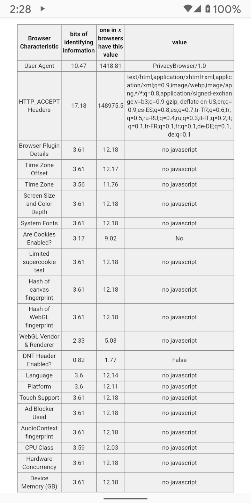

Nel momento in cui un browser si connette ai siti web, invia uno user agent che identifica il browser e le sue caratteristiche di rendering. Il web server può utilizzare tali informazioni per decidere quale versione del sito inviare al browser. Molti siti web infatti sono disponibili in versioni diverse a seconda che vi si acceda con browser da PC (desktop) o da dispositivo mobile.
Per default Clear Browser utilizza un proprio user agent (o identificazione), ovvero ClearBrowser/1.0. Questo invia un set minimo di informazioni al web server.
Dal momento che i web server non lo riconoscono come uno user agent di un dispositivo mobile, generalmente inviano la versione desktop del sito.
In confronto, lo user agent di default di WebView invia una grande quantità di informazioni sull'hardware e sul software del dispositivo. Sulla schermata Settings, selezionando WebView Default come User agent viene mostrato lo user agent che sarà inviato al web server. Lo screenshot sottostante mostra un Pixel 2 XL con Android 10 con installato Android System WebView 84.0.4147.125. La maggior parte dei web server lo riconoscerà come browser mobile e invierà la versione mobile del sito, se disponibile.
Nello user agent sono presenti informazioni sufficienti a far sì che solo di tanto in tanto a un sito web risulteranno visitatori identici. Se allo user agent viene aggiunto qualche altro pezzetto di informazione anche non univoca, spesso il risultato sarà quello di avere una impronta digitale unica. La Electronic Frontier Foundation ha creato un tool dal nome Panopticlick per dimostrare quante informazioni possono essere raccolte. Se si esegue questo test con JavaScript abilitato la quantità di informazioni è poi ancora maggiore. Browser Leaks e Am I Unique possono fornire ulteriori interessanti informazioni al riguardo.
Sono disponibili diversi user agent predefiniti che identificano i browser e i sistemi operativi più comuni.
Dal punto di vista dell'impronta digitale del browser, più è rara, più è facile da tracciare.
Nel caso in cui Clear Browser diventi di uso comune, e molti utenti utilizzino ClearBrowser/1.0 come user agent, sarà una buona scelta dal punto di vista della privacy.
Firefox o Chrome sono gli user agents più comuni, ma vengono aggiornati spesso e il loro numero di versione cambia così di frequente che lo user agent incluso in Clear Browser molto facilmente
sarà rimasto indietro rispetto alla maggior parte degli user agent tracciati nei log dei server.
Alcuni siti web non funzionano correttamente se non riconoscono lo User Agent. L'utilizzo delle impostazioni dei domini per impostare come User Agent WebView Default, oppure un altro che sia riconosciuto comunemente generalmente risolve il problema. WebView di Android non permette che lo user agent non sia specificato. In tal caso infatti, WebView invia al server lo user agent di default.